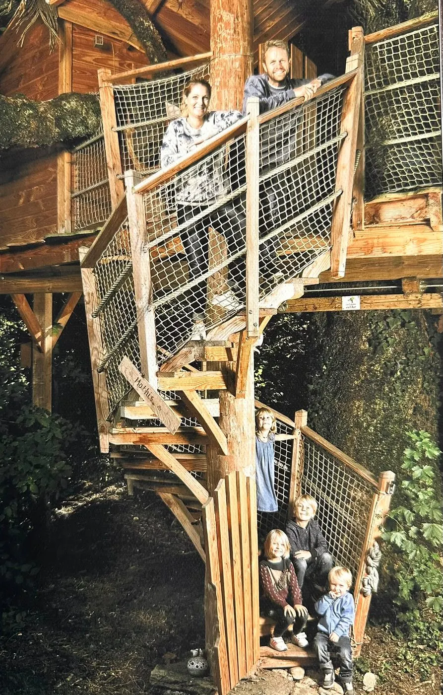

Ils ont changé de vie pour vivre leur rêve.
Marie et Renaud de Goumoëns ont quitté leur ancienne vie pour construire des cabanes dans les arbres de leur domaine d'Ogens, traversé par une rivière, et passer plus de temps en famille.
Chaque hébergement porte le prénom d'un de leurs enfants — Camille, Mathis, Alanis et Mila — et possède son propre univers. Soyez les bienvenus, et soyez prêts à rêver.
Offrir un bon cadeau